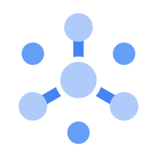

with ADKPause the agent, ask a human, resume safely
 ADK
ADK Python
Python Google Cloud
Google Cloud
 Google Developer GroupBangkok · DevFest 2026
Google Developer GroupBangkok · DevFest 2026
Agenda
- 01Why a human in the loopThe $200 refund rule, and why prompts and IAM miss it
- 02Deterministic gatesbefore_tool_callback blocks in code, every time
- 03Tool confirmationPause for yes/no, or let a human edit the arguments
- 04Hand off to a humanWhen the user is upset and wants a person
- 05Long waits and resumeLong-running tools, resumability, ADK 2.0 RequestInput
Why a human
in the loop
Some actions are too costly
to leave to the model alone
The agent can call issue_refund
Refund runs automatically
A supervisor must approve the exact amount before the API runs
Two fixes that fail in production
A rule in the system prompt
"Never refund more than $200." A clever user talks the model out of it with a jailbreak.
A Cloud IAM condition
IAM checks permissions on cloud resources. It cannot read the amount inside a tool call's JSON arguments.
From hard rule to human judgment
| Need | ADK feature | Human does | Since |
|---|---|---|---|
| A hard limit, no exceptions | before_tool_callback | Nothing. Code blocks it | Python 1.x |
| Yes/no before a risky call | require_confirmation=True | Approve or reject | Python 1.14 |
| Human edits the arguments | tool_context.request_confirmation | Approves with a payload | Python 1.14 |
| Approval takes hours | LongRunningFunctionTool + resume | Replies later, elsewhere | resume: 1.16 |
| User wants a person | before_model_callback + escalate tool | Takes over the chat | Python 1.x |
| Free-form input in a workflow | RequestInput in a graph | Types an answer | ADK 2.0 |
Deterministic
gates
Code that runs before every tool call,
whatever the model says
Two checkpoints around the model
Sends a request
Block or rewrite before the LLM runs
Plans a tool call with args
Sees amount, can skip the tool
Runs only if allowed
before_tool_callback and ADK skips the tool. Your dict becomes the tool result the LLM sees.A refund guard in ten lines
from typing import Any, Optional
from google.adk.agents import Agent
from google.adk.tools.base_tool import BaseTool
from google.adk.tools.tool_context import ToolContext
LIMIT = 200
def refund_guard(tool: BaseTool, args: dict[str, Any],
tool_context: ToolContext) -> Optional[dict]:
if tool.name != "issue_refund":
return None # other tools run
if args.get("amount", 0) > LIMIT:
return {"status": "blocked",
"reason": f"Over ${LIMIT}: needs a supervisor."}
return None # run the real tool
root_agent = Agent(
...,
tools=[issue_refund],
before_tool_callback=refund_guard,
)
Tool
confirmation
Pause the tool call
until a human answers
One flag: require_confirmation
from google.adk.tools import FunctionTool
from google.adk.tools.tool_context import ToolContext
# Always ask
FunctionTool(issue_refund, require_confirmation=True)
# Ask only above the limit
async def confirmation_threshold(
amount: int, tool_context: ToolContext
) -> bool:
"""Returns true if the amount is greater than 200."""
return amount > 200
FunctionTool(issue_refund,
require_confirmation=confirmation_threshold)
issue_refund
order_id: 1042 · amount: 350
The confirmation round trip
issue_refund(
function call adk_request_
In adk web, your app, or a chat card
same id, confirmed, payload
Reads tool_
Let the supervisor set the amount
def issue_refund(order_id: str, amount: float,
tool_context: ToolContext) -> dict:
if amount <= 200:
return pay(order_id, amount)
tool_confirmation = tool_context.tool_confirmation
if not tool_confirmation:
tool_context.request_confirmation(
hint=(f"Approve a refund of ${amount} for {order_id}? "
"Set approved_amount, or 0 to reject."),
payload={"approved_amount": 0},
)
return {"status": "Supervisor approval is required."}
approved = min(tool_confirmation.payload["approved_amount"],
amount)
if not tool_confirmation.confirmed or approved == 0:
return {"status": "Refund rejected."}
return pay(order_id, approved)
Approve a refund of $350 for 1042? Set approved_amount, or 0 to reject.
Reply from your own app
curl -X POST http://localhost:8000/run_sse \
-H "Content-Type: application/json" \
-d '{
"app_name": "human_tool_confirmation",
"user_id": "user", "session_id": "SESSION_ID",
"new_message": {"role": "user", "parts": [{
"function_response": {
"id": "FUNCTION_CALL_ID",
"name": "adk_request_confirmation",
"response": {"confirmed": true,
"payload": {"approved_amount": 350}}
}}]}
}'
Hand off
to a human
When the user is done
talking to the agent
Two kinds of human-in-the-loop
Tool-level
The agent asks a person to approve one action. The user keeps talking to the agent.
Conversation-level
The user wants a person. The agent steps aside and a human takes over the chat.
A handoff that does not make it worse
mood: frustrated (3rd contact)
order: 1042 · refund $350
tried: 2 refund attempts, both blocked
summary: "Wants refund for broken item"
When to hand off
Deterministic · in code
- User says "human", "real person", "คุยกับคน"
- Same problem fails N times
- Topic is always human-only, e.g. fraud
Model judgment · a tool
- User is clearly upset, even without keywords
- Agent cannot solve it with its tools
- Instruction says when to call
escalate_to_human
The handoff gate
from typing import Optional
from google.adk.agents.callback_context import CallbackContext
from google.adk.models import LlmRequest, LlmResponse
from google.genai import types
HANDOFF_WORDS = ("human", "real person", "คุยกับคน")
def handoff_gate(callback_context: CallbackContext,
llm_request: LlmRequest) -> Optional[LlmResponse]:
state = callback_context.state
last = llm_request.contents[-1].parts[0].text or ""
if not state.get("handoff") and any(
w in last.lower() for w in HANDOFF_WORDS):
state["handoff"] = True
notify_support_queue(callback_context) # your code
if state.get("handoff"):
msg = "A person from our team will reply here shortly."
return LlmResponse(content=types.Content(
role="model", parts=[types.Part(text=msg)]))
return None # normal turn
Let the model escalate, with context
from google.adk.tools import LongRunningFunctionTool
from google.adk.tools.tool_context import ToolContext
def escalate_to_human(reason: str, summary: str,
tool_context: ToolContext) -> dict:
"""Hand this conversation to a human support agent.
Call it when the user asks for a person, is upset,
or you cannot solve the problem with your tools."""
ticket_id = create_ticket(reason, summary) # your code
tool_context.state["handoff"] = True
return {"status": "pending", "ticket_id": ticket_id}
escalate = LongRunningFunctionTool(func=escalate_to_human)
root_agent = Agent(..., tools=[issue_refund, escalate],
before_model_callback=handoff_gate)
Who owns the chat, and when
ADK agentSets handoff, writes the summary

QueueTicket with transcript and packet
 Human console
Human consoleCRM, help desk or team chat
 Chat backend
Chat backendRoutes user messages to the human
handoff offLong waits
and resume
When the human answers
hours later, somewhere else
LongRunningFunctionTool
from google.adk.tools import LongRunningFunctionTool
def ask_for_approval(purpose: str,
amount: float) -> dict:
"""Ask for approval for the reimbursement."""
# create a ticket, notify the approver
return {'status': 'pending',
'approver': 'Sean Zhou',
'ticket-id': 'approval-ticket-1'}
long_running_tool = LongRunningFunctionTool(
func=ask_for_approval)
An approval that takes hours
 Notify the approver by email or chatA webhook service sends the reply back to the agent
Notify the approver by email or chatA webhook service sends the reply back to the agentPick up the same invocation
app = App(
name='my_resumable_agent',
root_agent=root_agent,
resumability_config=ResumabilityConfig(
is_resumable=True,
),
)
# later, resume where it stopped
runner.run_async(user_id='u_123',
session_id='s_abc',
invocation_id='invocation-123')
Ask for input inside a workflow
from google.adk import Workflow
from google.adk.events import RequestInput
# inside a graph node
yield RequestInput(message="Enter a number:")
# structured review
yield RequestInput(message=message,
payload=node_input,
response_schema=UserFeedback)
root_agent = Workflow(name="root_agent",
edges=[('START', step1, step2)])
HITL production checklist
- 1Put the hard limit in code (a callback), not only in the prompt
- 2Ask a human only where it matters: a threshold function, not every call
- 3Let the human set the exact value with a payload, then cap it with min()
- 4Make side-effect tools idempotent. Resume can run a tool more than once
- 5Check your session service supports confirmation, and log who approved what
Both kinds of HITL in one system
 LINEBACKEND · Cloud Run
LINEBACKEND · Cloud Run Request routerintent + confidenceAGENTIC PATH · ADK
Request routerintent + confidenceAGENTIC PATH · ADKHumans where it counts
Gate
before_tool_callback blocks what must never happen.
Confirm
require_confirmation pauses for a yes or no.
Decide
request_confirmation lets the human set the value.
Wait
Long-running tools and resume handle hours-long approvals.
And when the user wants a person: hand off with context, right away.
Try it today: FunctionTool(your_tool, require_confirmation=True) in adk web
Read more and try it
Tool confirmation
adk.dev/tools-custom/confirmationLong-running tools
adk.dev/tools-custom/function-toolsHuman input in graphs
adk.dev/graphs/human-inputThank you
Q & A
Punsiri Boonyakiat
Google Developer Expert in Cloud AI